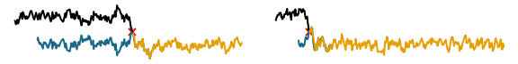

Unbiased MCMC with Couplings
A Research Implementation and Interactive Environment
Introduction
This repo is both a pip-installable library, and it generates this essay of the same name, which is meant as a reading companion to, and implementation of, the papers.
Install and experiment with
pip install git+git://github.com/colcarroll/couplings.git
Table of Contents
- Maximal Couplings: What is a coupling? What are some properties of couplings?
- Unbiased Metropolis-Hastings with Couplings (TODO)
- Unbiased Estimator (TODO)
- Unbiased Hamiltonian Monte Carlo with Couplings (IN PROGRESS)
References, Thanks
Many thanks of course to the authors below for interesting papers, and to the authors of the open source libraries used here for the useful code. Some ideas in the implementation are due to conversations and code from both the PyMC developers, and the TensorFlow Probability team. Thanks especially to Pierre Jacob for helpful conversations and encouragement
Primary References
- Unbiased Markov Chain Monte Carlo with Couplings. Pierre E. Jacob, John O’Leary, and Yves F. Atchadé. ArXiv:1708.03625 [Stat], August 11, 2017.
- Unbiased Hamiltonian Monte Carlo with Couplings. Jeremy Heng and Pierre E. Jacob. ArXiv:1709.00404 [Stat], September 1, 2017.
Secondary References
- Estimating Convergence of Markov Chains with L-Lag Couplings. Niloy Biswas and Pierre E. Jacob. ArXiv:1905.09971 [Stat], May 23, 2019.
- Geometric Integrators and the Hamiltonian Monte Carlo Method. Nawaf Bou-Rabee and Jesús María Sanz-Serna. ArXiv:1711.05337 [Math, Stat], November 14, 2017.
Code References
- Eric Jones, Travis Oliphant, Pearu Peterson, et al. SciPy: Open Source Scientific Tools for Python, 2001-
- Stéfan van der Walt, S. Chris Colbert and Gaël Varoquaux. The NumPy Array: A Structure for Efficient Numerical Computation, Computing in Science & Engineering, 13, 22-30 (2011)
- John D. Hunter. Matplotlib: A 2D Graphics Environment, Computing in Science & Engineering, 9, 90-95 (2007).